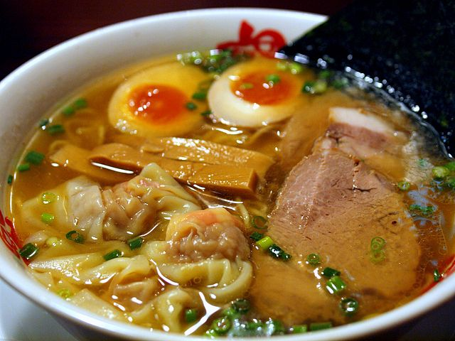

Sushi is ranked 1 for me. I love the combination of cheese, rice, seaweed, avacado and fish. My favorite sushi is anything with unagi in it.
I love Gyu-Kaku. Gyu-Kaku is a japanese barbeque where they provide selective cuts of meat for you to grill on your own. It is a great way to spend time with your family and friends. It is delicious and fun.

I do not mean instant ramen. I am talking about real ramen noodles here. One of the best things you will taste.

Okonomiyaki. A flavorful pancake that isn't sweet.

Delicious glazed eel cooked from charcoal. Could eat this all day.